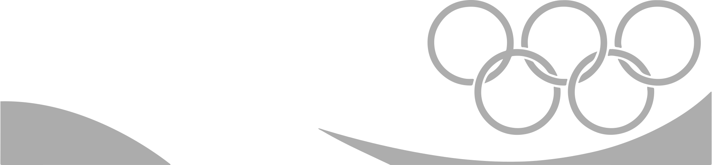

THE
OLYMPIC GAMES
PARIS
The Paris 2024 Olympic and Paralympic Games will be the biggest event ever organised in France. The Olympic games will take place from 26 July to 11 August 2024. The spectacle taking place during those weeks will go down in history and Paris will be the centre of the world – the world of sport and so much more. The Games are a popular, multicultural festival, a celebration to share with the rest of the world. They represent a new adventure that will embark France on an experience unlike anything it has seen before.
PARIS 2024
TICKET SALES
Want to be in the stands of Paris 2024? Join the
Club and increase your chances of getting a
ticket.
Olympic Summer Games Paris 2024
Find out all about the athletes, sports,
schedules, venues, mascot and much more.
paris 2024
26 july - 11 august
france
Latest News
Paris Olympics 2024
16 Sep 2021
The Olympic Refuge Foundation, the French Sports Ministry and a consortium of partners co-create a new programme for young refugees in France .
24 Jan 2022
Paris 2024 Olympic and Paralympic Week set to be out of this world.
03 Aug 2021
Paris 2024 and Milano Cortina 2026 Organising Committees sign collaboration agreement
about the games
the vision of paris 2024
Paris 2024 will see a new vision of Olympism in action, delivered in a unique spirit of international celebration.
We will offer one of the world’s most inspirational cities as a memorable stage for the athletes – and a truly global platform to promote them, and their incredible stories.
And we will partner with the entire Olympic family to demonstrate that, more than ever after an extremely challenging period, sport has a unique power to help create a better world.
Our plan features 95 percent existing or temporary venues, and every single one has a clear, defined legacy aligned with the city’s long-term development plans.
The sporting celebration will flow along the Seine, from the new Olympic Village, just 15 minutes from Paris city centre, to such city centre landmarks as the Eiffel Tower and the Grand Palais.
Got Any Question
WE'VE GOT ANSWERS
How many spectators will be able to attend the ceremony?
How long is the parade route for the opening ceremony?
Will the ceremony be accessible for everyone, including people with disabilities?
How can you attend the opening ceremony of the Paris 2024 Olympic Games?
When are the Paris 2024 Olympic and Paralympic Games?
How many tickets will be available for the Olympic and Paralympic Games?
How much will tickets to the Olympic & Paralympic Games cost?
How can we stay up-to-date with ticket-related news?
Is it possible to suggest educational resources to Paris 2024?
Where can I find the educational resources for Generation 2024?
How can we show the film “Race”?
What is the I’mPossible programme?
How many spectators will be able to attend the EndowmentFund?
How long does the Cultural Olympiad last?
Will the ceremony be accessible for everyone, including people with disabilities?
What will be the highlights during the Cultural Olympiad?
How are applicants assessed?
Is there any help provided in order to fill in the application form?
Can we apply in groups?
Do you need to live in France in order to be a volunteer?